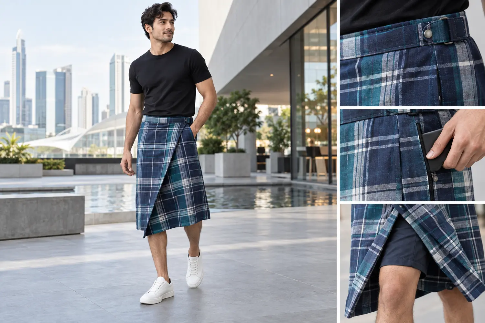
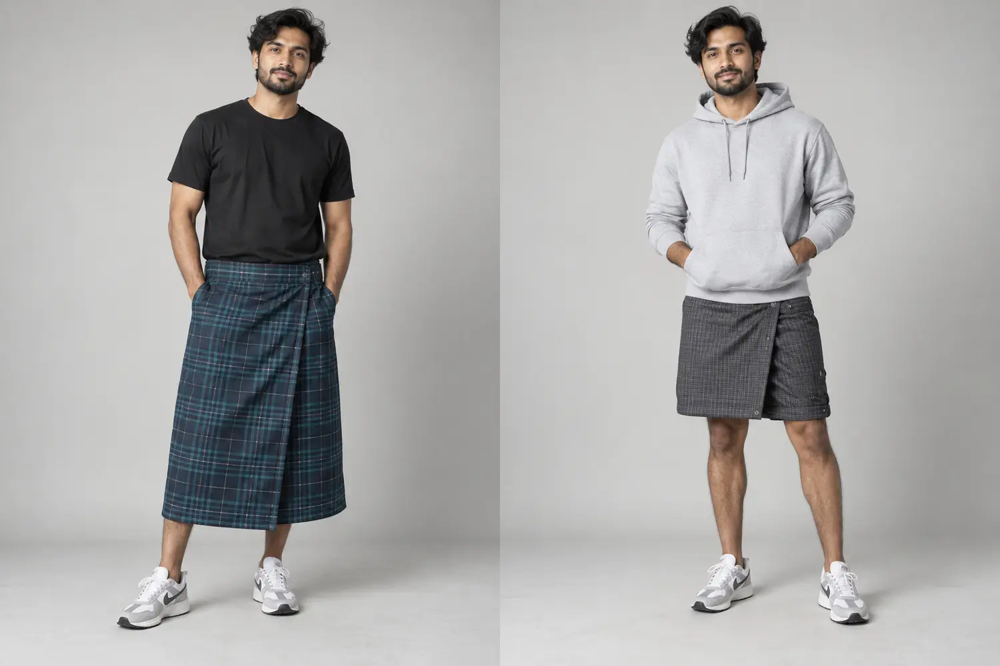

Support structured research, prototyping, testing and responsible market development.
Capital + business guidanceGlobal Modern Lungi Innovation Initiative
Help take the lungi into its next era.
We are seeking strategic investors, textile researchers, fashion designers, product engineers and international market partners to research, prototype and test modern lungi concepts for global lifestyles.
உலக சந்தைக்கு ஏற்ற நவீன லுங்கி வடிவங்களை ஆராய்ச்சி செய்து, மாதிரிகள் உருவாக்கி, சோதனை செய்து அறிமுகப்படுத்த முதலீட்டாளர்கள், ஆராய்ச்சியாளர்கள், வடிவமைப்பாளர்கள் மற்றும் வணிகக் கூட்டாளர்கள் தேவை.


Original exploratory visuals created for this initiative.
Collaboration call
More than funding: we need the right minds and markets.
This project is designed as a practical research-to-market collaboration, bringing Podaturpet weaving knowledge together with global product thinking. Explore the Modern Lungi product innovations →
Explore fibres, breathability, durability, wash performance and responsible material options.
Material science + testingDevelop inclusive silhouettes, modern checks, closures and styling for different climates.
Design + wearabilityRefine adjustable waists, snaps, secure pockets, inner coverage and convertible construction.
Function + manufacturabilityProvide country-specific buyer insight and help validate retail positioning and demand.
Market access + feedbackCollaborate on documented trials, user studies, sustainability and textile innovation.
Evidence + research partnership
The research opportunity
One woven idea. Many climates, bodies and lifestyles.
Research will focus on real user needs—not changing the lungi only for appearance.
Inclusive fitAdjustable sizing and comfortable forms for more customers.
Climate-ready materialsBreathable, layered and season-specific options for warm and cold regions.
Everyday functionSecure closure, usable pockets, movement and easy care.
Cultural respectModernisation that preserves the garment’s woven identity and origin story.
Research-to-market roadmap
A clear path from insight to launch.
Partnership discussions can be organised around six transparent stages, with scope and budgets agreed before work begins.
Global User Research
Interview potential wearers, buyers and retailers across selected markets.
Prototype Development
Create material, fit, closure, pocket and styling prototypes.
Wear & Market Testing
Measure comfort, movement, care, acceptance and purchase interest.
Pilot Manufacturing
Prepare a limited, quality-controlled pilot based on validated designs.
Brand & Education
Build respectful storytelling and simple how-to-wear content.
Global Market Entry
Work with suitable distributors, retailers and online channels.
Investor & collaborator interest
Bring your experience to the table.
Start with one prototype: name the customer problem, the concept you want to test, the expertise you can contribute and your proposed timeline. The first discussion will define a practical trial, responsibilities and the evidence needed before a wider launch.
We welcome serious introductory discussions with people and organisations who can contribute funding, research, design, manufacturing knowledge or market access.
Tell us your country and organisationSelect your role: investor, researcher, designer or market partnerExplain the expertise or support you may contributeSuggest the market or customer group you want to explore
Start a confidential introductory conversation
Send a short message. Detailed plans, responsibilities, budgets and legal terms will be discussed only after mutual review.
Send partnership interestUse the enquiry pageதமிழில்: உங்கள் நாடு, நிறுவனம் அல்லது பங்கு, நீங்கள் வழங்கக்கூடிய உதவி மற்றும் நீங்கள் ஆராய விரும்பும் சந்தையைத் தெரிவிக்கவும்.
This page is an invitation to discuss possible collaboration. It is not a public securities offering, financial advice or a promise of returns. Any investment will require independent due diligence and appropriate written legal agreements.